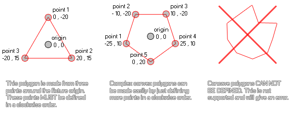

physics_fixture_add_point(fixture, xpos, ypos)
| Streit | Beschreibung |
|---|---|
| fixture | der Index der Vorrichtung |
| xpos | die X-Position des Punktes ( relativ zum Fixture-Ursprung für Polygonformen) |
| ypos | die Y-Position des Punktes ( relativ zum Fixture-Ursprung für Polygonformen) |
Rückkehr: N / A
Diese Funktion definiert die Punkte eines Polygons, das zuvor mit Hilfe von entweder auf das Fixture gesetzt wurde physics_fixture_set_polygon_shape oder es kann verwendet werden, um mit der Funktion Punkte zu einer Kette von Kantenbefestigungen hinzuzufügen physics_fixture_set_chain_shape. Bei einer Polygonform sind die Punkte relativ zum Ursprung der Fixture, wobei die 0,0 Position der x / y Achse die Mitte ist und die nachfolgenden Koordinaten wie in GameMaker Studio 2 üblich berechnet werden, wobei down / read + ist x, + y und oben / links ist -x, -y. Hier ist eine Illustration, die Ihnen hilft, diesen Prozess zu visualisieren:

Wie Sie sehen, kann jedes einfache konvexe Polygon auf diese Weise modelliert werden, aber konkave Polygone werden in diesem Moment nicht unterstützt. Um das Polygon zu schließen, müssen Sie das Fixture schließlich an eine Instanz binden. Sie sollten auch beachten, dass Sie mindestens drei Punkte für Ihr Polygon definiert haben müssen, bevor Sie es an eine Instanz binden, oder Sie erhalten einen Fehler und das Hinzufügen eines Punktes zu einem Fixture, das keine vorher festgelegte Polygonform hat, wird auch ein verursachen Error. Beachten Sie auch, dass die maximale Anzahl von Punkten, die für ein Gerät zulässig sind, acht ist.
Für Kettenformen (die einfach eine Reihe verbundener Kantenformen sind) wird diese Funktion einen Punkt als eine "Verbindung" festlegen, um die Kanten miteinander zu verketten. Daher müssen Sie mindestens zwei Punkte definiert haben, bevor Sie das Fixture an die Instanz binden, sonst erhalten Sie einen Fehler. Im Gegensatz zu Polygonen sind Sie jedoch nicht auf maximal acht Punkte beschränkt und können so viele hinzufügen, wie Sie zum Erstellen der Kette benötigen. Die Punkte werden in tatsächlichen Raumkoordinaten und nicht in Bezug auf die Instanz definiert.
physics_fixture_set_polygon_shape(fix_Ship);
physics_fixture_add_point(fix_Ship, 0,0);
physics_fixture_add_point(fix_Ship, -40, 100);
physics_fixture_add_point(fix_Ship, 40, 100);
Der obige Code wendet eine Polygonform auf die Fixture an, die in der Variablen "fix_Ship" indiziert ist, und definiert dann drei Punkte, um eine dreieckige Form zu erzeugen.